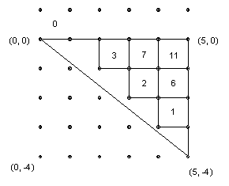
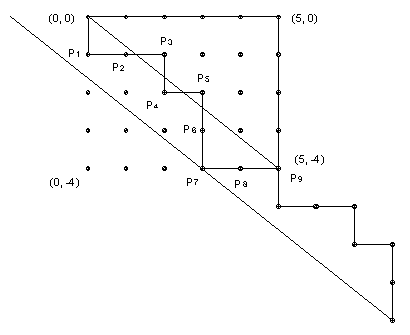

a and b are positive coprime integers. A subset S of the non-negative integers is called admissible if 0 belongs to S and whenever k belongs to S, so do k + a and k + b. Find f(a, b), the number of admissible sets.
Solution
Answer: f(a, b) = ( (a+b)Cb )/(a+b) = (a+b-1)/( a! b! ). p> Every integer k has a unique representation k = ma + nb with m and n integers and 0 ≤ m < b. [That should be reasonably well-known, but a proof is given at the end.] Hence there is a bijection between the integers and the lattice points (m, n) with 0 ≤ m < n. Fill this strip with a standard grid of unit squares and place the number (ma+nb) inside the square with (m, n) as its bottom left vertex. Obviously all the integers above the line n = 0 are non-negative. They must all be included in any admissible set S since 0 ∈ S. All the lattice points below the line ma + nb = 0 are negative, so we are only interested in squares which lie above this line. It runs from (0, 0) to (b, -a). Note that there are no lattice points this segment except for its endpoints, since a and b are relatively prime (if (c, d) was on the segment, then the (negative) slope would be a/b and d/c, which is impossible since a/b is in lowest terms). Thus S is defined by the numbers it contains inside the triangle bounded by m = b, n = 0, ma + nb = 0. The triangle for a = 4, b = 5 is shown below.

However, we do not have complete freedom to include or exclude numbers in the triangle, because if a particular number N is included, then all numbers above and to the right of it must also be included since they are obtained by adding positive multiples of a and/or b. In fact, these are the only numbers in the triangle which must be included if N is included. To prove this we have to show that if we add a to a number on the right hand border of the triangle, then we get a number above the triangle. In other words, we have to show that if ( (b-1)a + nb ) + a = m'a + n'b with 0 ≤ m' < b, then n' ≥ 0. But m'a = ba + nb - n'b = b(a + n - n'), so b must divide m'. Hence m' = 0. But the new number is certainly positive, so n' > 0, as required. Hence the intersection of an admissible set S with the numbers in the triangle is the numbers inside a union of rectangles each with upper right vertex at (b, 0) (the upper right vertex of the triangle). Hence it is all numbers inside the region bounded by the top and right sides of the triangle and a zig-zag line from (0, 0) to (b, -a). This zig-zag line or path has every step downwards or to the right. Also its vertices all lie above the line ma + nb = 0.
Conversely, any such path corresponds to a union of rectangles with upper right vertex at (b, 0) and hence to an admissible set S. So the number of admissible sets is the number of such paths. It is easy to count the paths which only satisfy the first condition (every step downwards or to the right). It is just (a+b)Cb or (a+b)!/( a! b! ). [That should be well-known. But to prove it a path is defined by the order of the unit steps. There are a downward steps and b rightward steps, so the number of paths is the number of ways of picking b objects from a+b. ]
Which of these have all their vertices inside the triangle?

Consider the diagram above. Label the lattice points on the path in sequence P1, P2, ... as shown. Now draw a line through each Pi parallel to the line ma + nb = 0. The key point is that all these lines are distinct. For if two points lie on a line then using them to get the slope of the line we have c/d = a/b with c smaller than a contradicting the fact that a/b is in lowest terms. So pick the point Pj with the lowest line (P7 in the example in the diagram). If we start from (0, 0) but follow the step sequence as if we had started at Pj then we get a path entirely above the line ma + nb = 0. [For clarity, the path is shown starting at Pj in the diagram.]. So, being slightly more formal, suppose the path is (s1, s2, ... , sa+b), where each si represents a step downwards or to the right. Then (s2, s3, ... , sa+b, s1), (s3, s4, ... , sa+b, s1, s2) , ... , (sa+b, s1, ... , sa+b-1) are also paths. It is clear from the diagram that the path (si+1, si+2, ... ) corresponds to the path starting from Pi and that if the line through Pi is a distance di above the lowest line through Pj, then the path starting from Pi will dip a maximum distance di below the line ma + nb = 0 (when translated to start at (0, 0) ). Since we have shown that all the distances di are different, it follows that all the (a+b) cyclically related paths are distinct and that just one of them lies entirely above the line ma + nb = 0.
So the paths divide into ( (a+b)Cb )/(a+b) groups of (a+b) paths with just one path in each group corresponding to an admissible set S. Hence f(a, b) = ( (a+b)Cb )/(a+b) = (a+b-1)/( a! b! ) admissible sets S.
Note
The proof that for relatively prime a, b every integer has a unique representation k = ma + nb with m and n integers and 0 ≤ m < b is as follows.
Let d be the smallest positive integer of the form ma + nb with m and n any integers. We can write a = qd + r with 0 ≤ r < d. But r also has the form ma + nb and it is smaller than d, so it must be 0. Hence d divides a. Similarly, d divides b. But a and b are relatively prime, so d = 1 and ma + nb = 1. So we also have (m + hb)a + (n - ha)b = 1 for any integer h. So by taking a suitable h we can get m+hb into the range 0, 1, ... , b-1. That establishes existence. Suppose k = ma + nb = m'a + n'b with 0 ≤ m, m' < b. Then (m-m')a = (n'-n)b. But a and b are relatively prime, so b must divide m-m'. Since -b < m-m' < b, that implies m = m'. Hence also n = n'.

© John Scholes
jscholes@kalva.demon.co.uk
17 Oct 2002